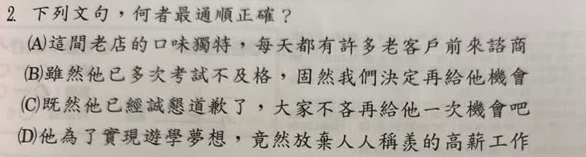

分享原卷｜第2題
完整原題
先想一想，再查看答案、解說與原圖
逐項解析
| 選項與原句 | 判讀 | 句意與判斷理由 |
|---|---|---|
| (A) 這間老店的口味獨特，每天都有許多老客戶前來諮商 | 不選 | 飲食老店的顧客應是前來光顧或消費，諮商與此語境不合。 |
| (B) 雖然他已多次考試不及格，固然我們決定再給他機會 | 不選 | 雖然引出讓步，後半應承接轉折；固然不能在此代替但是。 |
| (C) 既然他已經誠懇道歉了，大家不吝再給他一次機會吧 | 不選（語氣較不自然） | 不吝常用於不吝指教等正式客套語；此處勸大家再給機會，用不妨較自然。 |
| (D) 他為了實現遊學夢想，竟然放棄人人稱羨的高薪工作 | 應選 | 放棄高薪工作去遊學可能出乎旁人意料，竟然可表達這種驚訝，句意通順。 |
詳細說明與解題步驟
【A：用詞不合語境】
「諮商」通常指心理輔導或專業諮詢。前文談飲食老店的獨特口味，顧客應是前來消費或光顧，用「諮商」不合適。
可改為：這間老店的口味獨特，每天都有許多老客戶前來光顧。
【B：關聯詞承接不當】
「雖然」引出讓步，後面應以「但是」等轉折詞承接，也可用「仍然」表達結果不受影響；「固然」不能在此代替「但是」。
可改為：雖然他已多次考試不及格，但是我們仍決定再給他機會。
【C：不吝與不妨的用法差異】
「不吝」有不吝惜的意思，常用於「不吝指教」「不吝賜教」等較正式的客套語。本句是在勸大家再給一次機會，用表示可以考慮這樣做的「不妨」，語氣更自然，因此本題不選C。
可改為：既然他已經誠懇道歉了，大家不妨再給他一次機會吧。
原卷確實印「不吝」，題目保留原字；這裡說明語境與慣用搭配，不把原字擅改成「不妨」。
【D：語意通順，應選】
「竟然」表示出乎意料。為了實現遊學夢想而放棄人人稱羨的高薪工作，可能讓說話者感到意外，符合「竟然」的語氣。句意完整、用詞合適，答案選D。
「竟然」表驚訝，「毅然」強調果斷；本句不必將竟然改成毅然。
① 老店談口味，應說光顧或消費
A前面談飲食老店的獨特口味，後面卻用諮商，和情境不合。諮商通常用在心理輔導或專業諮詢；這裡的客人是來吃東西或消費，改成光顧更合適。原題仍保留諮商供辨讀。
② 勸大家再給機會，用不妨較自然
C是在勸大家考慮再給一次機會，用不妨更自然。不吝常見於不吝指教、不吝賜教等客套說法，和此處勸人採取做法的語氣不同。依本題比較不選C，保留原題不吝，不擅改字。
③ 竟然寫出乎意料，放在D語意通順
放棄令人稱羨的高薪工作去遊學，可能使旁人意外，因此竟然能表達這個語氣。毅然強調決斷，竟然強調意外；本句不必硬把竟然改成毅然，選D。
④ 語境、關聯詞與意外語氣，合看選D
答案 D：竟然放棄高薪工作去遊學
- A諮商不合老店用餐情境，光顧較合適。
- B雖然應接轉折，固然不能在此代替但是。
- C不妨較自然；D竟然能表達出乎意料。
核對註記：題幹與四選項依原圖保留；使用者確認D，解說釐清C的不吝與較自然的不妨，不再列待核對。
原圖（僅本題）
